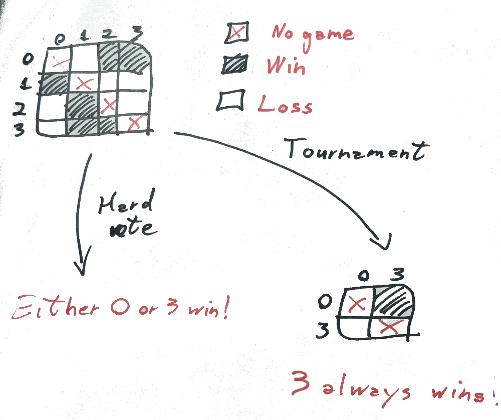

4 Applying the PSBC to pairs of digits of the MNIST database
The MNIST database is a well known database of handwritten digits used in the classical paper (Lecun et al. 1998). It consists of 70,000 images, each represented as a \(28\times 28\) matrix of pixels.
A sample of pairs in the MNIST database.
The PSBC adjust its weights - associated to the coefficients of Equation (3.2) - in order to achieve high accuracy in binary classification. The evolution of these weights can be seen in the next animation, captured while several PSBC with different architectures were trained. It is remarkable how fast the model achieves a high level of accuracy so quickly.
The evolution of PSBC’s weights during an epoch, classifying digits “0” and “1” of the MNIST database.
4.1 Multiclass classification using the PSBC
For illustrative purposes, we constructed a multiclass classifier using several PSBCs. Roughly speaking, the idea is to evaluate all the 45 classifier associated to pairs of digits in the MNIST database, and then see which digit won the most of the “matches”. In that way, we have committees that vote in order to assign indivuals to labels.
The multiclass classifier associated with the PSBC. No optimality was intended; as pointed out in the paper, Boosting Methods could be useful in order to improve its accuracy (at 77.25%)
Let me briefly explain how this happens; for further details, see the jupyter-notebook PSBC_ensemble_learning_notebook.ipynb.
4.1.1 How committees vote
Constructing multiclass classifiers using binary classifiers can be done in many ways. The method we used is called one-versus-one. As said earlier, labels are assigned based on voting. For each individual we assign a matrix of size \(10 \times 10\), where each entry (i,j) indicates the result of the classification of that digits through a PSBC binary classifier optimized on she subset of digits \(i\) and \(j\) of the MNIST database. Whenever \(i\) wins, we record a vote at \((i,j)\); likewise, whenever \(j\) wins, a vote at \((j,i)\) is recorded.
Among the voting systems used, we used hard voting, that chooses the label assigned randomly among those with highest number of votes, or by successive tournaments, aimed to eliminate lowest score achievers. The results, most ofg the time, agree, as shown in the next example.
Hard voting versus tournament. Results agree in most cases.
However, there are a few cases where both voting systems give different results. We note that in our tests hard voting performed better, by a slight margin; both voting systems yield about 77% accuracy. 
References
Lecun, Yann, Léon Bottou, Yoshua Bengio, and Patrick Haffner. 1998. “Gradient-Based Learning Applied to Document Recognition.” In Proceedings of the Ieee, 2278–2324.